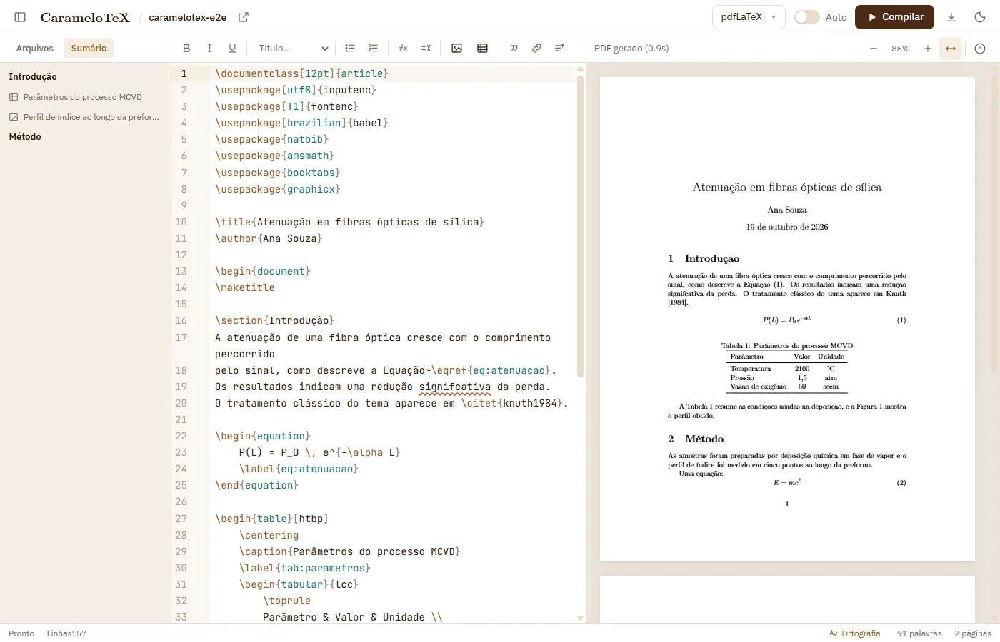
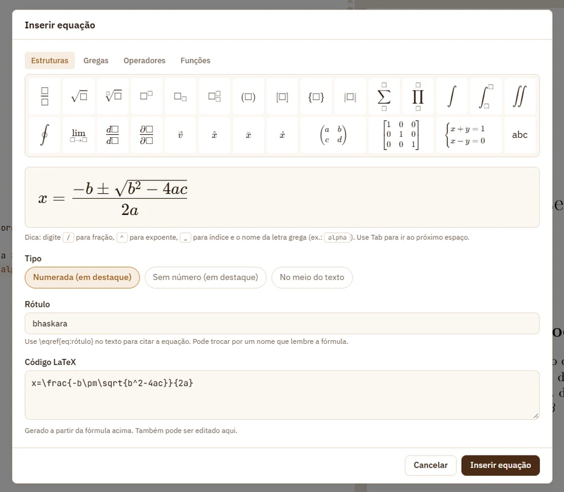
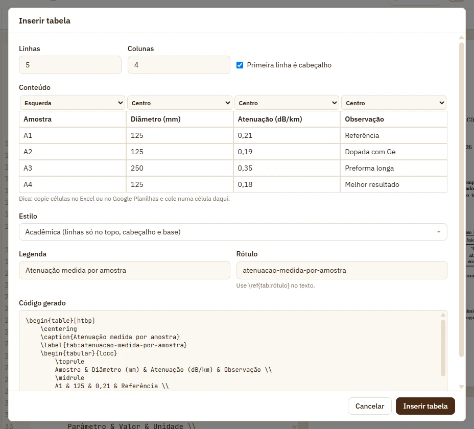
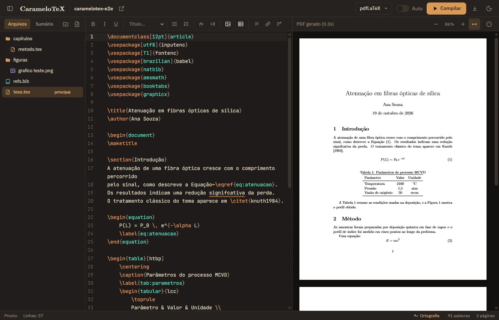

CarameloTeX
CarameloTeX
O melhor amigo dos seus documentos em LaTeX.
O CarameloTeX é um editor LaTeX para Windows que já vem com o compilador. Abra a pasta do seu artigo, TCC ou tese e gere o PDF no seu próprio computador.
Instalador leve; o LaTeX é baixado uma vez, na primeira abertura.


Como baixar e instalar
Não precisa instalar MiKTeX, TeX Live nem Docker. O CarameloTeX baixa e prepara o LaTeX sozinho.
-
Baixe o instalador
Clique em Baixar para Windows para baixar o arquivo
CarameloTeX-setup-x64.exe. O que mudou em cada versão fica na página de versões. -
Execute o arquivo
Se o Windows mostrar “O Windows protegeu o computador”, clique em Mais informações e depois em Executar assim mesmo.
-
Espere a preparação
Na primeira vez que abrir, com internet, o CarameloTeX baixa o LaTeX (cerca de 210 MB) e o prepara. Só acontece uma vez; depois, tudo funciona sem conexão.
-
Abra seu trabalho
Escolha a pasta onde estão seus arquivos
.texou comece um projeto novo a partir de um modelo.
O que dá para fazer
Pensado para quem escreve trabalhos acadêmicos: arquivos no seu computador, compilação local e ajuda para quem ainda não decorou os comandos do LaTeX.
Equações sem precisar saber LaTeX
Monte a fórmula vendo o resultado, como no Word: botões para fração, raiz, integral,
somatório, matriz e letras gregas, ou digite / para fração e
alpha para α. Escolha numerada, sem número ou no meio do texto, e o
CarameloTeX escreve o LaTeX para você (Ctrl+Shift+E).

Tabelas e figuras sem decorar comandos
Monte a tabela numa grade ou cole as células direto do Excel ou do Google Planilhas.
Para figuras, escolha a imagem (ou cole com Ctrl+V), a largura e a legenda.
O CarameloTeX gera o código, cria o rótulo para \ref e acrescenta os pacotes
que faltarem no preâmbulo.

Claro ou escuro, como o seu Windows
O tema acompanha a configuração do sistema, e um botão troca na hora. O código ganha cores para comandos, argumentos e comentários, e os erros da compilação aparecem sublinhados na linha certa.

Comece por um modelo
Onze modelos prontos, que já compilam de primeira. Escolha um, diga onde criar a pasta e comece a escrever.
- Artigo ABNT
- Artigo básico
- Conferência IEEE
- TCC
- Dissertação e tese
- Apresentação Beamer
- Beamer Metropolis
- Currículo
- Carta de apresentação
- Relatório técnico
- Fatura
Funciona offline
Depois da primeira abertura, o compilador LaTeX fica no seu computador. Você gera o PDF no avião, no laboratório ou em qualquer lugar sem Wi-Fi.
Seus arquivos ficam nas suas pastas
Não há conta nem nuvem: o editor salva direto na pasta, então você continua usando Git, OneDrive ou pendrive. Se um arquivo muda fora do app, ele é atualizado ou o CarameloTeX pergunta qual versão manter.
Barra de formatação e autocompletar
Negrito, títulos, listas, equações e citações num clique (Ctrl+B,
Ctrl+I). Ao digitar \ref{ ou \cite{, o editor
sugere os rótulos e as referências do seu .bib.
Corretor ortográfico em português
Sublinha palavras erradas no texto, sem confundir comandos do LaTeX. Clique com o botão direito para ver sugestões ou adicionar termos técnicos ao seu dicionário.
Sumário e contagem de palavras
Veja capítulos, seções, figuras e tabelas de todos os arquivos e pule para qualquer um. A contagem mostra as palavras de cada seção, útil para limites de TCC e artigos.
Do código ao PDF e de volta
Dê dois cliques numa linha do código para ver o trecho no PDF. Segure Ctrl e
clique no PDF para ir à linha que gerou aquele texto, mesmo em capítulos separados.
Erros que dizem onde estão
Cada erro mostra o arquivo e a linha, e um clique leva até ele. O editor também avisa sobre
referências sem \label, figuras que não existem e .bib faltando.
PDF rápido, mesmo em teses longas
Só as páginas na tela são desenhadas, e a leitura continua no mesmo ponto quando você
recompila. Zoom com Ctrl + roda do mouse ou ajuste à largura.
Bibliografia e pacotes sem configuração
BibTeX, natbib e biblatex com biber rodam sozinhos. Se o documento pedir um pacote que não está instalado, o CarameloTeX oferece baixar na hora. No ícone da caixa, veja os pacotes instalados, busque entre os mais de 8 mil do TeX Live e instale com um clique (precisa de internet).
Traga projetos de outros editores
Importe um projeto inteiro em .zip, com figuras e bibliografia. Os arquivos vão
para uma pasta nova e o arquivo principal é detectado sozinho.
Perguntas frequentes
- Preciso ter o LaTeX instalado?
- Não. O CarameloTeX inclui o TinyTeX, uma distribuição LaTeX compacta. Se você já usa MiKTeX ou TeX Live, ele também consegue usar a sua instalação.
- Quando a internet é necessária?
- Para baixar o instalador, para baixar o LaTeX na primeira abertura e para instalar algum pacote que o documento peça e não esteja instalado. Ao abrir, o programa também procura atualizações (dá para desligar no botão Atualizações). Escrever, compilar e corrigir a ortografia funcionam sem conexão.
- Meus documentos são enviados para algum servidor?
- Não. Os arquivos ficam nas pastas que você escolher, o PDF é gerado no seu computador e o corretor ortográfico também funciona sem internet.
- Por que o Windows mostra um aviso ao instalar?
- O instalador ainda não tem assinatura digital, então o SmartScreen não reconhece o editor. Clique em Mais informações e em Executar assim mesmo.
- Funciona no macOS ou no Linux?
- Por enquanto, só no Windows.